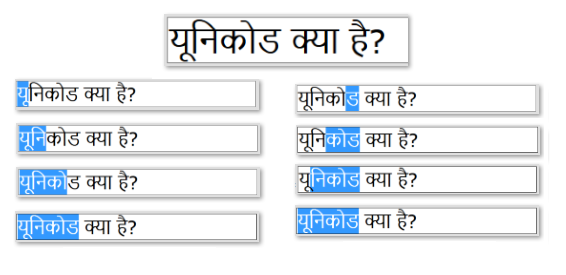
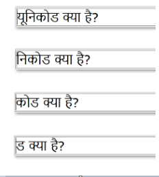
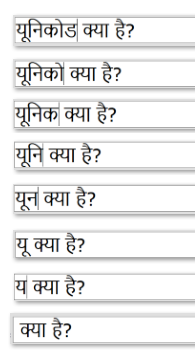
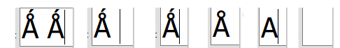

Generally speaking, most text navigation and editing follows the user-perceived character boundaries. For most implementations this corresponds to Unicode's definition of "default extended grapheme cluster" boundaries [UAX29]. The main exception to this is backspacing, which usually follows logical character boundaries in the underlying encoded text. For the simplest scripts and languages, these often amount to the same thing.
Cursor movement
Cursor movement, in the context of this document, refers to the use of the arrow keys on a physical keyboard (or their virtual equivalent). One thing to note is that the arrow keys (left, right, up, and down) always refer to the same visual direction, regardless of the direction or writing mode of the text.
Cursoring starts by positioning the cursor in the text, such as by clicking with the mouse. When cursoring in horizontal text, the left arrow button on a keyboard always moves the cursor one visual character to the left, while the right arrow does the same in the opposite direction. The up and down arrows move the cursor up or down a row of text respectively.
In vertical text, the left arrow moves left one row and the right arrow right one row, while up and down arrows move one visual character up or down in the row of text.
Selecting text via the keyboard
Text selection begins much like cursoring, by positioning the cursor at the start (or end) of the desired text and then selecting to the other end of the desired text. This can be done using a pointing instrument, such as a mouse, or using keyboard gestures such as holding "shift" and cursoring through the text. Unlike cursoring, text selection is constrained by the need to select logical characters, so a different number of keystrokes or gestures may be required compared to simple cursoring. This is particularly true for bidirectional text.
Selection using a pointing device, such as a mouse, is subtly different in most implementations than using the cursor keys to extend a selection. When using a pointing device, the selection is entirely logical, between the start and end point of the selection. At least on most physical keyboards, the user can access text selection, usually by holding down the "shift" key while cursoring in the text. As noted before, the cursor keys always move visually and in the indicated direction of the key. For certain bidirectional texts this can mean that the entire text cannot be selected via the cursor keys alone!
Combining marks
Selecting, cursoring, and deleting text in Unicode is also complicated by the use of combining characters. When the visual units of text map 1:1 to characters in the memory of the computer, then cursor movement, selection, and deletion traverse the text a character at a time. However, some languages and scripts use multiple characters to compose a single user-perceived character (which we call a grapheme cluster or grapheme for short). When this is the case, the relationship between cursor movement and delete or backspace functions becomes more complex.
For example, the Hindi word for Unicode यूनिकोड
is composed of seven Unicode characters from the Devanagari script.
Most users would identify this word as containing four units of text. Each of the first three graphemes consists of two characters: a syllable and a modifying vowel character (the last grapheme contains only a single character). So the word contains seven Unicode characters, but only four graphemes:
| Word |
यूनिकोड |
| Graphemes |
यू |
नि |
को |
ड |
| Code Points |
य |
ू |
न |
ि |
क |
ो |
ड |
|
U+092F |
U+0942 |
U+0928 |
U+093F |
U+0915 |
U+094B |
U+0921 |
Cursor movement in this Hindi word matches the Unicode grapheme cluster boundaries in both the forward and reverse direction:

Usually cursor movement is expected to follow the boundaries of user-perceived characters, since users generally expect such movement to follow their perceptions. In addition, text selection captures complete graphemes, since a common operation is to copy a sequence of characters, possibly for later insertion elsewhere. Users don't expect to capture only a portion of a user-perceived character, nor do they want a cut operation to join any remaining combining marks with unrelated character sequences originally separated by some of the source text.
Forward deletion works the same way. If the user positions the cursor at the start of the Hindi word and presses the "delete" key four times, the entire word is removed, one grapheme at a time, like this:

Backspace, however, sometimes works differently. In this case, positioning the cursor after the same Hindi word and pressing backspace requires 7 key presses in order to erase the entire word as the characters are erased one Unicode code point at a time:

One reason suggested for the difference between delete and backspace behavior is that removing the base character (which is always the first character in a Unicode character sequence, and thus the first code point encountered in forward deletion) usually consumes any combining marks associated with it. That way combining marks associated with the base character aren't left over to combine with the preceeding sequence of characters, or, if there were no preceeding characters, be "orphaned" and form an invalid sequence.
Backspace, meanwhile, can safely remove combining characters hanging from a given base character without causing other characters in the character sequence to change meaning. One reason sometimes attributed for this behavior is that it allows characters that have been "built-up" using multiple keypresses or other input mechanisms to be corrected without retyping the whole sequence.
Tamil presents the same concept in a visually more striking way. The syllable 'ko' consists of a two character sequence (U+0B95 U+0BCB), which looks as if it is made of three units. What's more the base character is the one in the middle. These characters still behave the same as those in Hindi (or other languages): cursoring, selection, and forward deletion move over the pair as a single unit. Backspacing deletes the combining mark first:
INSERT TAMIL HERE
Indic scripts, such as the Devanagari and Tamil examples above, are not the only scripts affected by this. The same can be found for combining marks in many languages. For example, the first cluster in this Thai word: คืออะไร
. [get better example; demonstrate middle cursor deletion effects in Thai]
Some character sequences can be written in either a "composed" or a "decomposed" forms that affect how selection and deletion performs. For example, Korean characters can be written in either a precomposed form or using a sequence of combining marks (called jamo). Here's one example:
| Composed |
Decoposed |
| 각 |
각 |
| ᄀ ᅡ ᆨ |
| U+AC01 |
U+1100 U+1161 U+11A8 |
When written in the precomposed form, each Korean character remains atomic for all operations. When composed from jamo, most systems allow backspacing into the character (while treating the character as atomic for selection and forward deletion).
Korean is just an example of this. Ones that are less common in real life but are sometimes used as examples also help illustrate this mysterious "character duality". While most Latin script text with accents is encoded as precomposed characters, it is possible to encode most characters as a base character with one or more combining marks. When this decomposed sequence is used, the behavior is similar to the Korean: cursor, text selection, and forward deletion include the base character and all of its associated accents, while backspacing deletes the combining marks one-at-a-time before the base character is reached.
For example, the character U+01FA Latin Capital Letter A with Ring Above and Acute can also be composed as the sequence U+0041 U+030A U+0301. Both behave like a single letter for selection and deletion, but backspacing reveals the decomposed structure of the latter:

Exceptions
There are also exceptions to these general rules.
For example, depending on your platform, emoji sequences sometimes behave as if they were atomic characters. For example, a "family" emoji such as 👨👩👧👧, when it is composed as an emoji sequence (here it is U+1F468 U+200D U+1F469 U+200D U+1F467 U+200D U+1F467), might be treated for selection as well as both forwards and backwards deletion as a single unit of text, while on other platforms the individual characters might be accessible to both the cursor and deletion.
Another counter case appears in some Indic script langauges where some conjuncts are formed with multiple base characters. An example from the Devanagari script is the syllable kshi (क्षि) which is formed using the sequence U+0915 U+094D U+0937 U+093F. The characters U+0915 and U+0937 are both base characters and technically this forms two grapheme clustered. However, in many fonts (and to many users) this character sequence forms a single "shape" perceived to be a single unit of text. In many cases, though, the user can both cursor into the conjunct and forward delete only a part of the sequence.